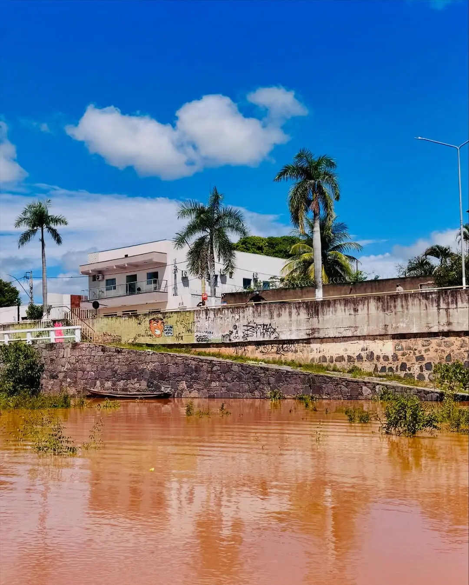

Sobre o local
O antigo Cais Coronel Rocha é um marco da época em que a navegação no Rio São Francisco impulsionava o desenvolvimento de Januária, sendo por décadas o principal meio de transporte de cargas e passageiros. A partir da segunda metade do século XX, porém, a navegação no Velho Chico entrou em declínio, resultado de uma combinação de fatores como a redução da vazão do rio, o assoreamento, o sucateamento da frota de vapores, a priorização das rodovias e uma alegada inviabilidade econômica.
A redução da vazão do rio e o assoreamento transformaram profundamente a área onde funcionava o antigo Porto do Salgado, marco inicial do povoamento de Januária. A estrutura do Cais Coronel Rocha, erguida entre 1948 e 1951, também sofreu grandes alterações: uma charmosa balaustra, duas colunas em estilo eclético e uma ampla escadaria que conduzia ao Rio São Francisco deram lugar a uma contenção de pedra simplória, implantada para proteger a cidade das inundações provocadas pelas cheias do rio.
Hoje, a área do antigo cais Coronel Rocha é ocupada por uma mata ciliar em processo de sucessão, que fica submersa pelas cheias do rio apenas por cerca de dois meses, no auge do verão. Durante a seca, o rio inspira contemplação e lamento pela sua fragilidade, mas, no tempo das chuvas, o rio se renova, ganha vigor e alcança o muro do cais de Januária como se viesse beijá-lo. A população celebra a cheia transformando o local em um ponto de encontro e alegria. Onde todos se reúnem para contemplar o Velho Chico, registrar memórias em fotos ou até se refrescar em um mergulho.
Além de sua importância histórica e simbólica, o Cais de Januária se destaca pela localização privilegiada, na Avenida São Francisco, área boêmia da cidade onde se encontram bares, restaurantes e hotéis. É também palco de eventos tradicionais, como o Carnaval de Januária e outras manifestações culturais, que reforçam sua vocação como espaço de convivência, alegria e memória, unindo moradores e visitantes à beira do Velho Chico.
Horário de funcionamento: Visitação livre diariamente
Tipo de visita: Visita livre
Formas de pagamento: Não há cobrança para acesso
Pet Friendly: Sim
Contato: Não há
Site: Não há